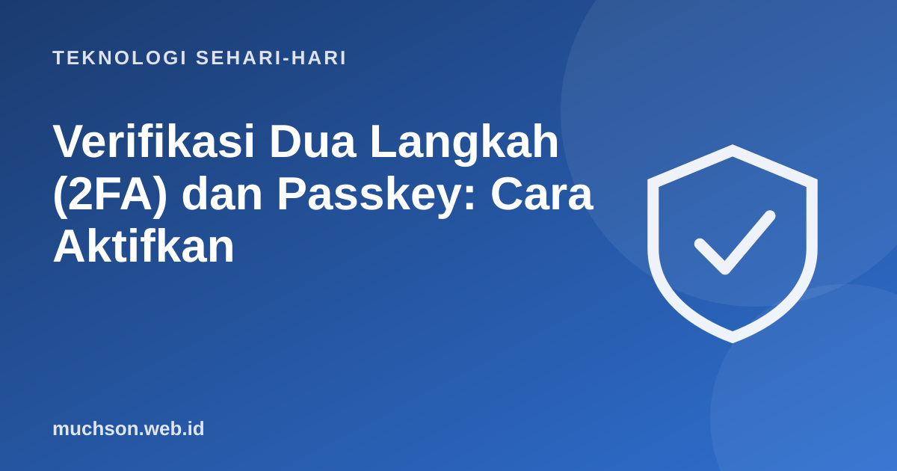

Beranda › Artikel › Teknologi Sehari-hari
Teknologi Sehari-hariVerifikasi Dua Langkah (2FA) dan Passkey: Cara Aktifkan
Kata sandi saja tidak lagi cukup. Verifikasi dua langkah menambahkan satu lapis lagi: bahkan bila penjahat mendapatkan sandi Anda, mereka masih butuh sesuatu yang hanya Anda miliki. Pengaktifannya hanya beberapa menit.

Cara kerjanya
Jenis-jenis faktor kedua
Akun yang diaktifkan lebih dulu
Jangan lupa
Simpan kode pemulihan (backup codes) di tempat aman, terpisah dari ponsel. Bila ponsel hilang tanpa kode itu, Anda bisa terkunci dari akun sendiri.
Jangan bagikan kode
Jangan pernah membagikan kode verifikasi kepada siapa pun, termasuk yang mengaku petugas. Penipu sering meminta kode itu untuk masuk ke akun Anda.
Tanya jawab
Apakah 2FA bisa dibobol?
Tidak ada yang mutlak, tetapi ia menghentikan sebagian besar serangan massal. Waspadai penipuan yang membuat Anda menyerahkan kode.
Bagaimana bila ganti ponsel?
Pindahkan autentikator sesuai petunjuk aplikasinya sebelum menjual atau mereset ponsel lama, dan siapkan kode pemulihan.
Apa itu passkey?
Pengganti kata sandi berbasis kriptografi yang disimpan di perangkat atau pengelola kata sandi, dibuka dengan biometrik atau PIN.